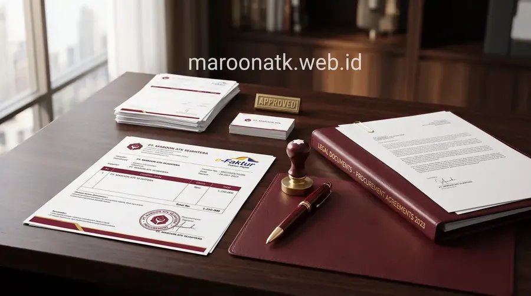
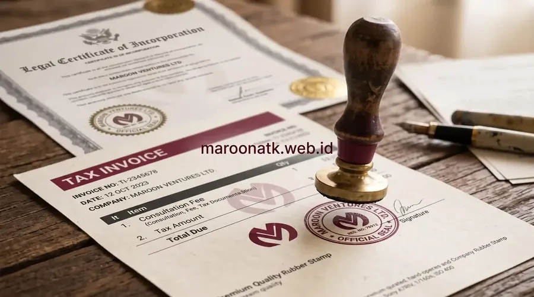

Mengapa Legalitas Supplier ATK adalah Faktor Kritis bagi Tim Procurement Korporat
Supplier ATK kantor yang terpercaya untuk kebutuhan procurement korporat wajib memenuhi lima indikator kritis: berbadan hukum PT resmi terdaftar di Kemenkumham, memiliki status Pengusaha Kena Pajak (PKP) aktif dengan kemampuan penerbitan e-Faktur PPN 11% yang valid, menerbitkan Surat Penawaran Harga (SPH) resmi berkop perusahaan, memiliki kapasitas gudang dan armada pengiriman internal, serta memberikan garansi keaslian produk ATK yang dipasok.
Kesalahan dalam memilih supplier ATK kantor bukan sekadar berdampak pada kualitas produk yang diterima—lebih jauh dari itu, dampaknya dapat merembet pada masalah hukum perpajakan, gagalnya proses audit internal, hingga risiko pemotongan anggaran oleh manajemen. Setiap rupiah yang dikeluarkan untuk pengadaan ATK harus dapat dipertanggungjawabkan secara akuntansi dengan dokumen yang sah dan dapat ditelusuri.
Panduan ini disusun oleh tim Tentang Maroon ATK berdasarkan pengalaman langsung mendampingi ratusan proses procurement ATK untuk perusahaan swasta, BUMN, dan instansi pemerintah di seluruh Indonesia. Gunakan panduan ini sebagai checklist final sebelum Anda menerbitkan Purchase Order kepada vendor ATK mana pun.

Mengenal Papan Tulis Digital Smart Board: Spesifikasi & Panduan Memilih
Panduan lengkap spesifikasi papan tulis digital interaktif 4K UHD untuk ruang rapat korporat dan institusi modern.
5 Kriteria Legalitas Wajib Supplier ATK yang Harus Diverifikasi Sebelum PO
1. Status Entitas Hukum: Perseroan Terbatas (PT) Resmi
Supplier ATK yang Anda pilih harus berbentuk Perseroan Terbatas (PT) yang terdaftar dan aktif di Sistem Administrasi Badan Hukum (SABH) Kemenkumham. Hindari bertransaksi dengan supplier berbentuk CV, UD, atau perorangan untuk pengadaan dalam jumlah besar, karena kapasitas hukum dan pertanggungjawaban finansial mereka sangat terbatas. Verifikasi melalui portal AHU Online (ahu.go.id) menggunakan nama atau nomor akta perusahaan.
2. NPWP Perusahaan & Status PKP (Pengusaha Kena Pajak) Aktif
Supplier wajib memiliki NPWP Perusahaan yang aktif dan terdaftar sebagai Pengusaha Kena Pajak (PKP) di Direktorat Jenderal Pajak. Status PKP dapat diverifikasi melalui portal DJP Online. Hanya supplier berstatus PKP yang secara hukum berwenang menerbitkan Faktur Pajak/e-Faktur PPN 11%. Supplier tanpa status PKP tidak dapat memberikan bukti potong pajak yang sah—ini adalah dealbreaker absolut untuk pengadaan institusional.
3. Kemampuan Penerbitan e-Faktur PPN 11% yang Valid
E-Faktur adalah faktur pajak elektronik yang diterbitkan melalui sistem DJP. Mintalah contoh e-Faktur dari transaksi sebelumnya dan verifikasi keasliannya melalui portal efaktur.pajak.go.id menggunakan Nomor Seri Faktur Pajak (NSFP). E-Faktur palsu atau faktur manual tidak dapat dikreditkan sebagai Pajak Masukan perusahaan Anda dan berpotensi memicu sanksi administrasi perpajakan.
4. Surat Penawaran Harga (SPH) Resmi Berkop Perusahaan
SPH adalah dokumen formal yang mencantumkan detail item, spesifikasi, harga satuan, total nilai, dan syarat-syarat jual beli. SPH dari supplier ATK terpercaya harus menggunakan kop surat resmi perusahaan yang mencantumkan nama PT, alamat kantor, NPWP, dan kontak resmi—bukan sekadar pesan WhatsApp atau spreadsheet informal tanpa identitas perusahaan.
5. Jaminan Keaslian Produk & Kapasitas Distribusi
Supplier terpercaya memiliki perjanjian resmi dengan distributor atau produsen merek yang dipasok. Mereka dapat menunjukkan sertifikat keagenan atau surat penunjukan distributor resmi. Untuk produk seperti toner cartridge dan kertas HVS merek premium, keaslian produk sangat kritis karena produk palsu/bajakan berisiko merusak perangkat printer dan tidak memenuhi spesifikasi teknis yang tertera.

Verifikasi dokumen legalitas PT dan e-Faktur PPN supplier ATK adalah langkah pertama yang tidak boleh dilewati oleh tim Purchasing sebelum menerbitkan Purchase Order pertama.

Spesifikasi Paket Pengadaan ATK Bulanan B2B
Rincian isi dan perbandingan tiga tingkatan paket pengadaan ATK bulanan untuk kebutuhan operasional perusahaan Anda.
Matriks Penilaian Supplier ATK: Framework Evaluasi 4 Dimensi
Gunakan matriks evaluasi berikut sebagai standar objektif dalam menilai dan membandingkan beberapa calon supplier ATK kantor secara sistematis:
| Kriteria Penilaian Supplier | Indikator Legalitas & Kualitas | Risiko Jika Diabaikan | Standar Pemenuhan Maroon ATK |
|---|---|---|---|
| Legalitas Entitas Bisnis | PT Resmi (Kemenkumham), NIB aktif (OSS), NPWP Perusahaan valid | Tidak ada pertanggungjawaban hukum sengketa; kontrak tidak sah; risiko kerugian tanpa ganti rugi | ✓ PT Resmi terdaftar Kemenkumham, NIB & NPWP aktif, siap audit |
| Kelengkapan Dokumen Pajak | Status PKP aktif, penerbitan e-Faktur PPN 11% via sistem DJP, SPPKP valid | Pajak Masukan tidak dapat dikreditkan; risiko sanksi administrasi perpajakan; gagal audit BPK | ✓ PKP Aktif: e-Faktur PPN 11% diterbitkan untuk setiap transaksi, verifiable di DJP Online |
| Standar Dokumen Procurement | SPH resmi berkop perusahaan, BAST, Surat Jalan, Kwitansi resmi | Dokumen tidak valid untuk laporan pertanggungjawaban anggaran; ditolak oleh finance/akuntansi | ✓ SPH Resmi berkop PT Maroon ATK + BAST + Surat Jalan untuk setiap pengiriman |
| Kapasitas Pengiriman & Stok | Gudang stok mandiri, armada pengiriman internal, SLA pengiriman tertulis | Keterlambatan pengiriman; kehabisan stok di saat kritis; ketergantungan pada dropshipper tidak terkontrol | ✓ Gudang & Armada Internal di Malang, Surabaya; jangkauan pengiriman seluruh Indonesia |

Supplier ATK terpercaya memiliki fasilitas gudang stok yang memadai dan armada pengiriman internal sendiri—bukan sekadar dropshipper tanpa inventaris—untuk menjamin keandalan dan ketepatan waktu pengiriman.

SOP Pengadaan Furniture Kantor B2B untuk Purchasing Team
Panduan taktis SOP pengadaan furniture kantor yang dapat diadaptasi juga untuk proses pengadaan ATK skala korporat.
Risiko Nyata Menggunakan Supplier ATK Non-Formal atau Tanpa Legalitas
Banyak perusahaan tergoda menggunakan supplier ATK informal (toko online tanpa PT, reseller perorangan, atau dropshipper) karena harga yang tampak lebih murah. Namun, "harga murah" ini sering kali menyembunyikan risiko-risiko tersembunyi yang biayanya jauh lebih besar:
- Risiko Pajak: Tanpa e-Faktur PPN yang valid, perusahaan Anda tidak dapat mengkreditkan Pajak Masukan. Pada skala pengadaan besar, ini berarti kerugian pajak yang material setiap bulannya.
- Risiko Audit: Dokumen belanja yang tidak memenuhi standar (tanpa kop perusahaan, tanpa NPWP, tanpa SPH formal) akan ditolak oleh auditor internal, KAP, maupun BPK dalam proses pemeriksaan laporan keuangan.
- Risiko Kualitas Produk: Supplier non-formal sering memasok produk counterfeit, expired, atau substandar—terutama untuk toner cartridge dan kertas HVS—yang dapat merusak aset printer perusahaan dan memperburuk kualitas dokumen penting.
- Risiko Kontinuitas Pasokan: Tanpa kontrak formal dan kapasitas gudang yang memadai, supplier informal rentan kehabisan stok mendadak, meninggalkan operasional kantor Anda terganggu pada momen kritis.
Maroon ATK: Standar Pemenuhan Supplier ATK Berlegalitas untuk Procurement Korporat & Instansi
Sebagai Maroon ATK (maroonatk.web.id), kami memahami beban tanggung jawab yang dipikul oleh tim Purchasing, General Affairs, dan Procurement Manager dalam setiap keputusan pengadaan. Oleh karena itu, kami membangun layanan kami di atas fondasi kepercayaan dan akuntabilitas yang terverifikasi:
- Legalitas PT Resmi: Maroon ATK beroperasi sebagai Perseroan Terbatas yang terdaftar sah di Kemenkumham, memberikan kepastian hukum dan pertanggungjawaban yang jelas dalam setiap kontrak pengadaan.
- PKP Aktif & e-Faktur PPN 11%: Setiap transaksi dilengkapi e-Faktur PPN 11% yang valid dan dapat diverifikasi secara langsung melalui portal resmi DJP Online.
- SPH Resmi Berkop Perusahaan: Kami menerbitkan Surat Penawaran Harga formal dengan kop resmi PT Maroon ATK, mencantumkan detail item, spesifikasi teknis, harga satuan, dan syarat pengiriman—siap diajukan dalam proses approval internal perusahaan.
- Unit Demo & Sampel Fisik: Tim Purchasing dapat meminta sampel fisik produk ATK (kertas, toner, ordner) sebelum penerbitan PO untuk memverifikasi kualitas secara langsung.
- Gudang Stok & Armada Pengiriman Internal: Dengan gudang di Malang dan Surabaya serta jaringan mitra logistik terpercaya, Maroon ATK menjamin ketersediaan stok dan ketepatan waktu pengiriman ke seluruh wilayah Indonesia.
Siap Memulai Pengadaan ATK dengan Supplier Berlegalitas?
Konsultasi gratis & SPH dalam 24 jam
Hubungi tim Maroon ATK sekarang untuk verifikasi legalitas, request sampel produk, dan mendapatkan SPH resmi dalam waktu kurang dari 24 jam kerja.
Kesimpulan: Memilih Supplier ATK Terpercaya adalah Investasi Perlindungan Procurement Jangka Panjang
Poin Kunci Panduan Memilih Supplier ATK Berlegalitas
Keputusan memilih supplier ATK yang tepat adalah investasi perlindungan yang akan menghindarkan perusahaan atau instansi Anda dari risiko pajak, risiko audit, dan risiko gangguan operasional yang berpotensi merugikan jauh lebih besar dari selisih harga yang tampak.
- Verifikasi 5 Kriteria Legalitas: PT Resmi (Kemenkumham), NPWP aktif, status PKP, kemampuan e-Faktur PPN 11%, dan SPH berkop perusahaan—wajib diverifikasi sebelum PO pertama.
- Gunakan Matriks Evaluasi Objektif: Bandingkan minimal 3 supplier menggunakan framework 4 dimensi (legalitas, dokumen pajak, standar procurement, kapasitas pengiriman) untuk keputusan yang dapat dipertanggungjawabkan.
- Maroon ATK Memenuhi Semua Standar: Hubungi kami untuk verifikasi legalitas lengkap dan request SPH resmi secara gratis, tanpa komitmen awal.
Pertanyaan Umum (FAQ) Supplier ATK Kantor Terpercaya
Supplier ATK kantor yang terpercaya wajib memiliki: Akta Pendirian PT dari Kemenkumham, NPWP Perusahaan aktif, Surat Pengukuhan Pengusaha Kena Pajak (SPPKP/PKP), kemampuan penerbitan e-Faktur PPN 11% yang valid, Nomor Induk Berusaha (NIB) dari OSS, serta Surat Penawaran Harga (SPH) resmi berkop perusahaan. Dokumen-dokumen ini wajib diverifikasi sebelum penerbitan Purchase Order pertama.
E-Faktur PPN dari supplier ATK dapat diverifikasi melalui portal resmi DJP Online (efaktur.pajak.go.id) menggunakan Nomor Seri Faktur Pajak (NSFP). Faktur PPN yang sah akan menampilkan data PKP penjual, nama pembeli, kode transaksi, dan nilai DPP yang sesuai dengan transaksi. Jangan menerima faktur pajak manual atau faktur yang tidak dapat diverifikasi melalui sistem DJP.
Ya, Maroon ATK (maroonatk.web.id) berbadan hukum PT resmi dan berpengalaman dalam proses pengadaan untuk instansi pemerintah melalui mekanisme e-procurement. Kami menyediakan seluruh kelengkapan dokumen yang diperlukan: e-Faktur PPN 11%, SPH resmi berkop perusahaan, BAST, dan Surat Keterangan Rekanan (SKR). Hubungi tim kami untuk informasi lebih lanjut mengenai skema pengadaan pemerintah.

Arby Ardiansyah
Praktisi pengadaan B2B berpengalaman lebih dari 5 tahun dalam manajemen rantai pasok sarana kantor, verifikasi legalitas vendor, dan e-procurement untuk instansi pemerintah dan korporasi swasta di Indonesia.